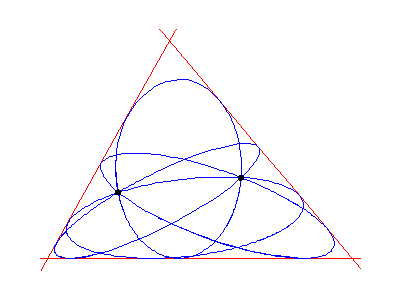

In 1848 Steiner asserted that, given 5 general conics in the plane (ellipses, hyperbolae, or parabolae), there are exactly 7776 (=65) other conics tangent to the given 5. He was unfortunately wrong and the correct answer of 3264 (=25 102) was given by Chasles in 1864. More recently, Fulton, and Ronga, Tognoli, and Vust have separately shown it is possible to choose 5 real conics so that each of the 3264 tangent conics are also real.
While this talk will explain the obvious numerological questions (where
do 7776 and 3264 come from?), my goal is to convince you that 3264 is the
correct number. This explanation will also show why this works over the real
numbers.
(We will also explain the picture below)
